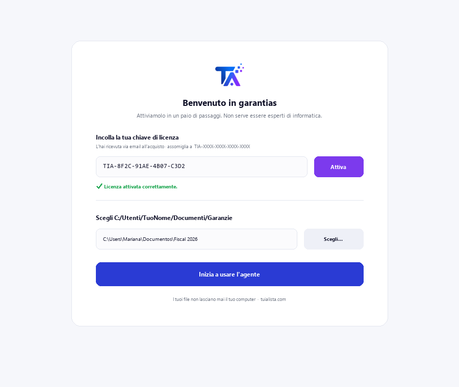
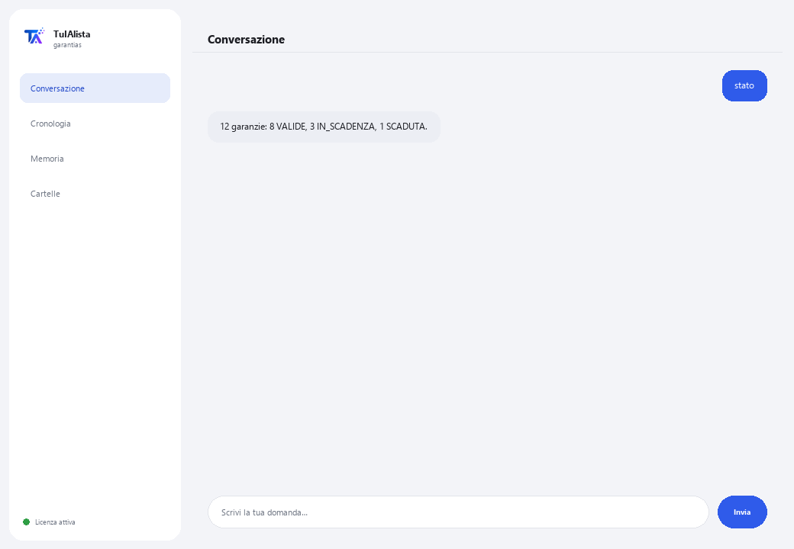

Agente Reclami e Garanzie
Traccia le tue garanzie, ti avvisa prima che scadano e ti genera la lettera di reclamo pronta da inviare.
Cosa risolve e cosa ti serve?
Le persone e le aziende perdono denaro a causa di garanzie che scadono senza che nessuno le controlli: un elettrodomestico, un laptop, uno strumento che si è rotto ed era ancora coperto. Questo agente trasforma i tuoi scontrini, fatture e ricevute sparse in un sistema di recupero attivo.
- Ti serve: la tua chiave di licenza (TIA-XXXX-XXXX-XXXX-XXXX) e la cartella con le tue ricevute. Niente Python né conoscenze tecniche.
- Primo risultato in meno di 5 minuti: installi, attivi, scegli la tua cartella ed esegui stato per vedere lo stato di tutte le tue garanzie.
- Le tue ricevute non lasciano mai il tuo computer — l'analisi gira in locale.
soporte@tuialista.com o visita tuialista.com/soporte — di solito rispondiamo lo stesso giorno lavorativo.1 Cosa fa questo agente
Gli indichi la cartella con i tuoi scontrini, fatture e ricevute e lui:
- Li legge (testo, PDF, Word, Excel e CSV), senza che tu debba aprirli uno per uno.
- Estrae i dati di acquisto: prodotto, data, importo, negozio, numero di serie e periodo di garanzia.
- Calcola lo stato di ogni garanzia: valida, in scadenza o scaduta.
- Ti avvisa delle garanzie in scadenza prima che sia tardi.
- Genera una lettera di reclamo formale pronta da inviare (con riferimento alla normativa sulla tutela dei consumatori applicabile).
- Calcola il valore totale dei tuoi prodotti ancora coperti.
- Risponde alle tue domande: “il mio laptop è ancora in garanzia?”
Risultato: smetti di perdere garanzie per dimenticanza e recuperi denaro che ti spetta.
2 Installazione (2 minuti)
Per Windows. Non serve internet permanente né caricare nulla sul cloud.
Scarica l'installer da tuialista.com/descargar (agente Garanzie) e aprilo. Crea un collegamento sul desktop con il logo — non richiede Python né terminale.
Doppio clic sulla nuova icona. Incolla la tua chiave di licenza (ricevuta via email all'acquisto) e premi Attiva. Vedrai un segno di spunta verde quando è valida.
Seleziona la cartella con i tuoi scontrini e ricevute e premi Inizia a usare l'agente. La prossima volta si avvia direttamente — ricorda la tua chiave e la tua cartella.

3 Come usarlo
L'agente apre una finestra di chat, come un'app di messaggistica — non è uno schermo nero da programmatore. Scrivi il tuo comando o la tua domanda nella casella di testo in basso, premi Invia (o Invio), e la risposta appare come un messaggio, proprio come in questa immagine reale:

I comandi seguenti sono le parole che puoi scrivere nella stessa casella di testo:
> statoTutte le tue garanzie: VALIDA, IN_SCADENZA, SCADUTA o SENZA_DATA, con i giorni residui.
> in_scadenza [giorni]Garanzie che scadono nei prossimi N giorni (30 di default), per reclamare in tempo. Es.: in_scadenza 60.
> reclamabiliProdotti con garanzia valida, indicando se hai tutti i dati per reclamare o cosa ti manca.
> reclamare <prodotto>La lettera di reclamo formale pronta, con riferimento alla normativa applicabile, e uno spazio per descrivere il problema. Es.: reclamare laptop.
> mancantiRicevute a cui manca un dato chiave (data, importo, negozio, numero di serie) per poter reclamare.
> copertoSomma il valore dei tuoi prodotti con garanzia valida e in scadenza.
> domanda libera?Scrivi qualsiasi domanda in linguaggio naturale, es.: quanta garanzia mi resta sul frigorifero?
> esciTermina la sessione (funziona anche exit).
Vuoi vedere le 20 ricette complete con un esempio reale per ciascuna? Consulta il Catalogo delle ricette — un documento separato data la sua lunghezza: catalogo_recetas.pdf insieme a questo manuale, o la versione interattiva su tuialista.com/guia/garantias/recetas.
4 Esempi di uso comune
Rivedere cosa sta per scadere
in_scadenza 45 — vedi quali garanzie scadono presto e decidi se conviene reclamare ora.
Reclamare un prodotto rotto
reclamabili → reclamare frullatore — confermi che è ancora in garanzia e ottieni la lettera pronta.
Sapere quanto hai coperto
coperto
Completare ciò che manca
mancanti — rilevi quali ricevute necessitano di più dati prima di poter reclamare.
5 Domande frequenti
Le mie ricevute vengono caricate su internet?
Quali formati accetta?
Come conosce la data, l'importo e la garanzia?
Cosa succede se la ricevuta non indica il periodo di garanzia?
La lettera di reclamo è legalmente valida?
In quale lingua mi risponde?
Legge un PDF scansionato?
Modifica i miei file?
Posso cambiare la cartella?
Sostituisce una consulenza legale o dei consumatori?
6 Risoluzione dei problemi
Non legge un .pdf, .docx o .xlsx
Mostra “0 ricevute”
Mostra “Licenza non valida” o chiede di riconnettersi
“Nessun fornitore IA configurato”
Nessuna di queste soluzioni ha risolto il tuo problema? Scrivici direttamente — saremo felici di rivederlo con te.
soporte@tuialista.com o visita tuialista.com/soporte — di solito rispondiamo lo stesso giorno lavorativo.7 Privacy e riservatezza
Le tue ricevute non lasciano mai il tuo computer.
- L'agente legge e analizza i file in locale, sul tuo stesso dispositivo. Non li carica su nessun server.
- L'estrazione dei dati di acquisto e il calcolo delle scadenze avvengono sul tuo dispositivo.
- L'unica cosa che viaggia su internet è: (1) una verifica che la tua licenza sia attiva — che non include le tue ricevute —, e (2) quando generi una lettera di reclamo o fai una domanda libera, viene inviato un frammento delle informazioni rilevanti al motore IA per redigere quella risposta.